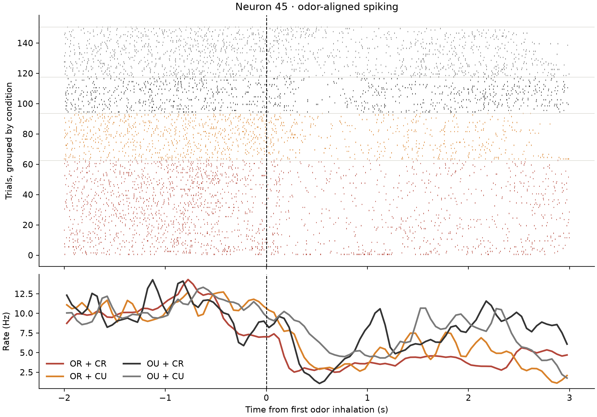
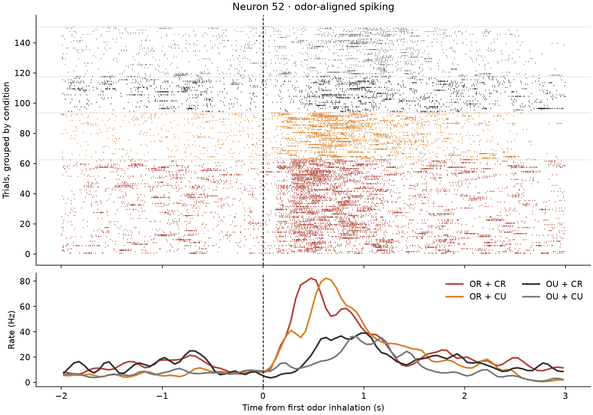
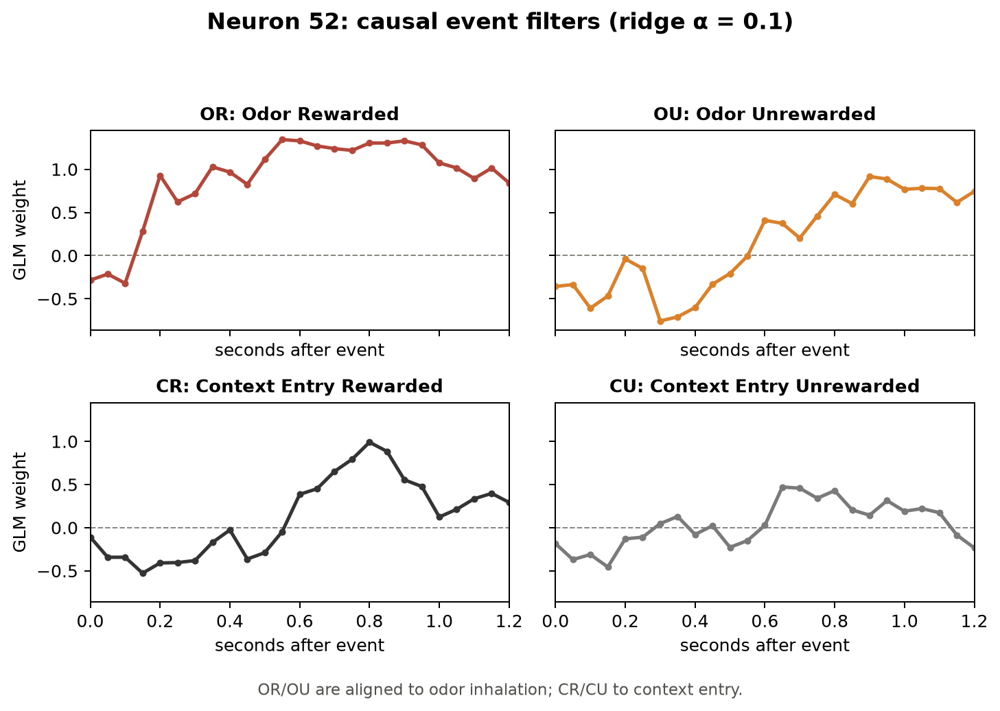
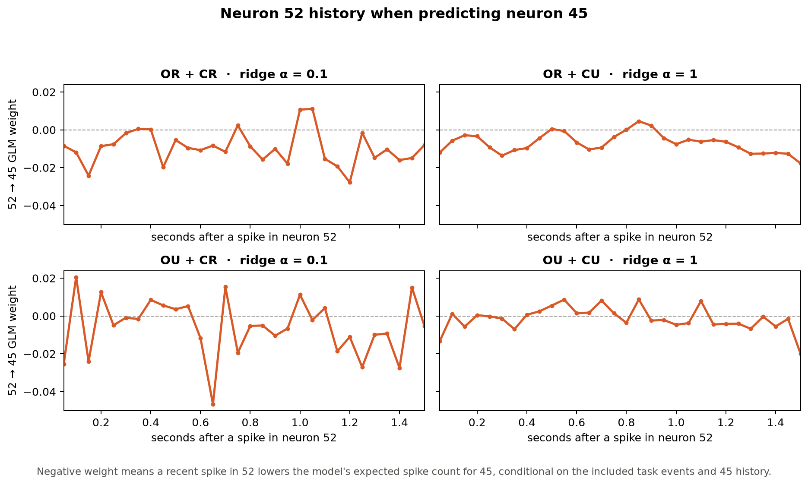
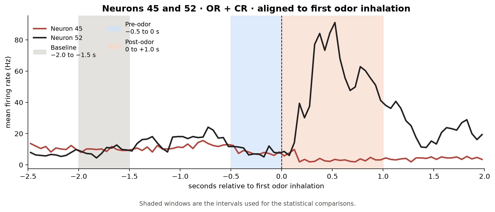

Event identity, point-process GLMs, and a putative inhibitory link
A compact re-analysis of mouse spike recordings from a virtual odor–context task: first, ask whether a neuron carries identity-specific task-event information; then test whether that evidence supports a simple inhibitory story about a second neuron.
In each trial, a mouse traversed a visual corridor and entered one of two contexts. An odor puff followed after context entry, at the animal’s first inhalation. Water was available in the reward zone only for the rewarded-odor / rewarded-context combination (OR + CR), contingent on licking; OR + CU, OU + CR, and OU + CU were not rewarded. The analyses below use those four odor–context combinations.
This analysis is based on the recordings described in Federman et al., Nature Communications (2024). The repository contains the analysis code and documentation, but does not redistribute the neural recordings. To reproduce the analysis with the original data, contact the corresponding authors through the paper’s data-availability route. The paper also links the authors’ source-data record.
The original authors’ Matlab GLM implementation is available at marinburginlab/olfactionGLM.
Two units, one tempting visual story
Neuron 45 reduces its firing during the task, particularly in OR + CR. Neuron 52 shows a pronounced task-locked response. This makes the pair interesting, but opposite-looking averages are not evidence that 52 inhibits 45: both responses may simply reflect the same task structure at different times.


Each tick is a spike; the dashed line marks first odor inhalation. The lower panels average firing rate for each odor–context combination. OR/OU identify the odor and CR/CU identify the visual context.
A causal point-process model
Spikes were binned in 50 ms windows and modeled as Poisson counts. Each task event enters as a one-bin impulse followed by a causal 1.25 s response kernel. The exploratory design also included separate kernels for context exit. For the presentation below, I show and ablate the four identity-specific blocks that matter for the main result: OR, OU, CR and CU. Context-exit blocks were evaluated but are omitted from the figure and table because they do not contribute materially to the result discussed.
Regularization strength is selected inside each training split, and all model scores are evaluated on complete held-out trials. The score is held-out Poisson log likelihood expressed as bits per spike relative to a constant-rate baseline: higher is better.
Neuron 52 carries identity-specific event information
Across all four odor–context combinations, replacing shared event kernels with identity-specific kernels improves the event-only prediction of neuron 52. The scores below come from the full exploratory identity model; the displayed figure and ablation table focus on the four odor and context-entry blocks described above.
5th–95th: +0.027 to +0.080
5th–95th: −0.004 to +0.019
| Model | Shared event kernels | Identity-specific kernels | Change |
|---|---|---|---|
| Task events only | 0.272 | 0.327 | +0.055 |
| Task events + neuron 52 history | 0.603 | 0.611 | +0.008 |
The difference becomes smaller once the model receives the neuron's own recent history. This is not temporal leakage: the history is strictly causal and is evaluated on held-out trials. Recent activity from a neuron selective for OR already acts as a proxy for the stimulus that activated it; once the model sees recent spikes from neuron 52, some of the information previously supplied by event identity is already represented in the neuron's own history.

These are the four displayed regularized coefficients from the full exploratory fit on all four trial types; they describe the model after the held-out comparison, rather than serving as an additional test. Odor kernels are aligned to first inhalation; context-entry kernels to context entry.
| Removed event block | Held-out loss | 5th–95th range | Positive splits | Filter L2 norm |
|---|---|---|---|---|
| OR | 0.071 | +0.048 to +0.103 | 20 / 20 | 5.073 |
| OU | 0.017 | −0.008 to +0.032 | 18 / 20 | 2.869 |
| CR | 0.005 | −0.008 to +0.013 | 15 / 20 | 2.317 |
| CU | −0.003 | −0.009 to +0.002 | 4 / 20 | 1.294 |
Held-out loss is the full event model minus the ablated model, in bits per spike. The L2 norm summarizes coefficient magnitude in the descriptive full-data fit; it is not itself a significance test.
Within this recording and these held-out trial resamples, neuron 52 has a robust event-related component whose shape depends on odor/context identity. This is evidence about predictive task structure, not a claim about a circuit mechanism.
The 5th–95th range summarizes the 20 overlapping resamples of this recording; it is not a between-animal or between-session confidence interval.
What does the coupling model show?
The coupling result follows the same stimulus selectivity. Adding neuron 52’s recent spikes improves prediction of neuron 45 in both OR conditions, where 52 is strongly activated, but not in the two OU conditions. This is the pattern expected if 52 carries conditionally inhibitory information about 45 when the rewarded odor is present.
5th–95th: +0.0004 to +0.0357
5th–95th: +0.0035 to +0.0687
| Condition | Events + 45 history | + 52 history | Change | 5th–95th range | Positive splits |
|---|---|---|---|---|---|
| OR + CR | 0.160 | 0.175 | +0.014 | +0.0004 to +0.0357 | 19 / 20 |
| OR + CU | 0.060 | 0.095 | +0.035 | +0.0035 to +0.0687 | 19 / 20 |
| OU + CR | 0.062 | 0.061 | −0.001 | −0.0226 to +0.0243 | 10 / 20 |
| OU + CU | 0.031 | 0.030 | −0.001 | −0.0080 to +0.0035 | 11 / 20 |

In both OR conditions, the regularized coupling filters are predominantly negative: conditional on task events and neuron 45 history, a recent spike in 52 tends to lower the model’s expected spike count for 45. The filters are descriptive fits; the table above is the held-out test.
Does this support a 52 → 45 inhibitory link?
The coupling model is consistent with the inhibitory hypothesis: adding neuron 52’s recent spikes improves held-out prediction of neuron 45 in both OR conditions, and the fitted OR coupling filters are predominantly negative. That pattern is suggestive, but it is not yet a causal test.
The timing check asks whether the two neurons occupy the right temporal order for a causal interpretation. Rates are measured in three fixed windows aligned to first odor inhalation: a pre-odor baseline from −2.0 to −1.5 s, a pre-event window from −0.5 to 0 s, and a post-event window from 0 to +1.0 s. The baseline uses all 151 trials with an observed odor inhalation; no trial had to be discarded because its odor event occurred too early for the baseline window.

The PSTH shows neurons 45 and 52 in OR + CR, the condition that most strongly suggests an anticipatory effect by eye. The shaded regions are the exact intervals used in the tests below.
| Neuron | Condition | Window | Mean rate | Δ vs baseline | 95% CI for Δ | p | p adjusted |
|---|---|---|---|---|---|---|---|
| 45 | OR + CR | Pre | 8.03 Hz | −2.10 | [−3.48, −0.72] | 0.0035 | — |
| 45 | OR + CU | Pre | 11.48 Hz | +1.35 | [−0.12, +2.82] | 0.070 | — |
| 45 | OR + CR | Post | 3.63 Hz | −6.50 | [−7.36, −5.63] | 2.8×10−22 | — |
| 45 | OR + CU | Post | 4.90 Hz | −5.23 | [−6.17, −4.29] | 2.1×10−12 | — |
| 52 | OR + CR | Pre | 8.70 Hz | +0.71 | [−1.19, +2.62] | 0.458 | 1.000 |
| 52 | OR + CU | Pre | 8.06 Hz | +0.08 | [−1.56, +1.71] | 0.923 | 1.000 |
| 52 | OR + CR | Post | 51.90 Hz | +43.92 | [+40.40, +47.43] | 4.6×10−34 | 1.8×10−33 |
| 52 | OR + CU | Post | 49.81 Hz | +41.82 | [+34.96, +48.68] | 2.2×10−13 | 8.7×10−13 |
The timing check shows neuron 45 below baseline before the odor in OR + CR, and the suppression becomes even stronger afterward. Neuron 52 does not differ from baseline before the odor in either OR condition, but rises sharply afterward. The model is therefore compatible with a condition-dependent inhibitory functional association. However, the temporal analysis undermines a simple causal interpretation: neuron 45 already changes before neuron 52 shows its strongest event-locked response, and both signals are structured by the same task events.